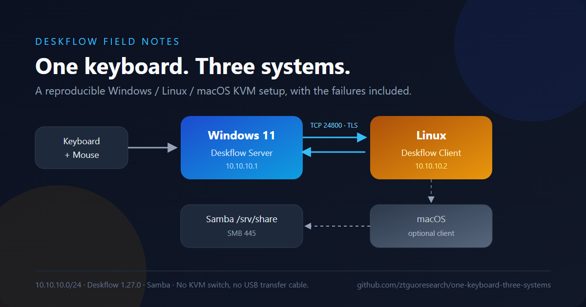

Why not a cable
对拷线救不了 Linux
成品对拷线的文件互传依赖 Windows 客户端，Linux 往往只能共享键鼠。问题不在线，在线的两端有没有软件。
读这一章 →Windows · Linux · macOS
用开源 Deskflow 把多台机器接成一张桌子。这里没有“十分钟无脑教程”， 只有可复现的配置、真实的报错、以及一次 AI 辅助排障的完整复盘。

成品对拷线的文件互传依赖 Windows 客户端，Linux 往往只能共享键鼠。问题不在线，在线的两端有没有软件。
读这一章 →直连没有 DHCP。Windows 的 169.254.x.x 和 Linux 的 10.10.10.2 不在一个网段，Deskflow 永远连不上。
看网络与安全 →复制图片像素可以，复制 PNG 文件不行。默认 3 MB 的剪贴板还要为 4K 截图调大。
看剪贴板边界 →它帮我们读日志、列假设、写命令；也会把 IP 猜错、把旧配置套到新版本上。证据永远优先于猜测。
看 AI 排障复盘 →